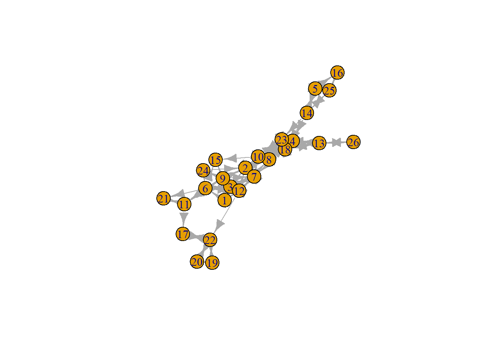
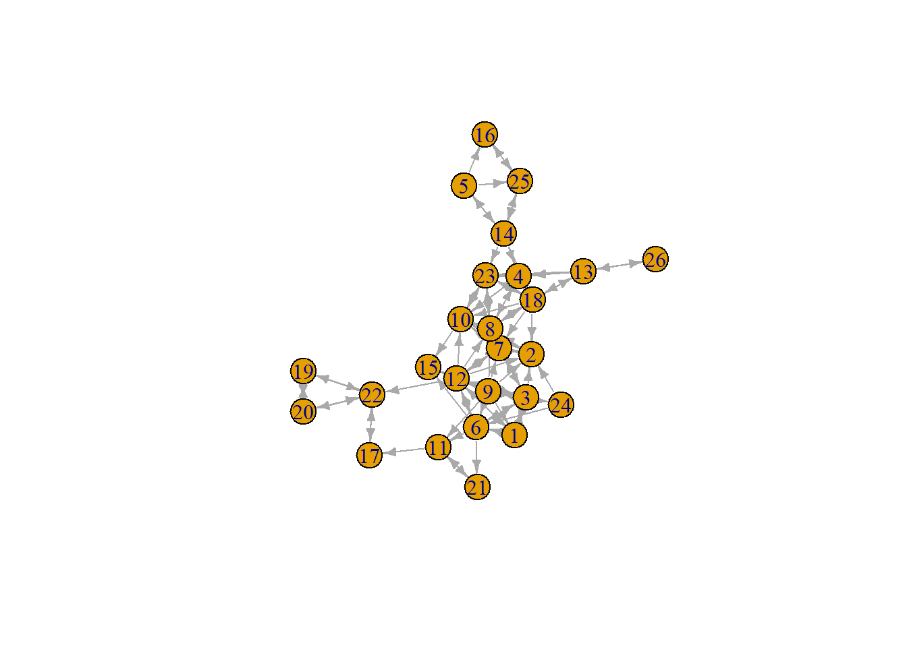

8 Solutions to Tutorial 4 - Spatial Models in R
8.1 Preliminaries
Load different packages:
## Registered S3 methods overwritten by 'lme4':
## method from
## simulate.formula ergm
## simulate.formula_lhs ergm8.3 Linear regression
Clean variables:
PupilsWaveV$acthomew <- 5-PupilsWaveV$acthomew
PupilsWaveV$sex <- PupilsWaveV$sex-1
PupilsWaveV$sex <- 1-PupilsWaveV$sex
PupilsWaveV$acthomew[PupilsWaveV$acthomew == 9] <- NALinear regression:
##
## Call:
## lm(formula = acthomew ~ sex + age, data = PupilsWaveV)
##
## Residuals:
## Min 1Q Median 3Q Max
## -7.1157 -0.1590 -0.1157 0.8410 0.8996
##
## Coefficients:
## Estimate Std. Error t value Pr(>|t|)
## (Intercept) 2.93214 0.35102 8.353 <2e-16 ***
## sex 0.04332 0.02847 1.522 0.128
## age 0.01530 0.02885 0.530 0.596
## ---
## Signif. codes: 0 '***' 0.001 '**' 0.01 '*' 0.05 '.' 0.1 ' ' 1
##
## Residual standard error: 0.7698 on 2943 degrees of freedom
## (50 observations deleted due to missingness)
## Multiple R-squared: 0.0008427, Adjusted R-squared: 0.0001637
## F-statistic: 1.241 on 2 and 2943 DF, p-value: 0.2892We see that girls do more homework than boys, but this is not statistically significant.
8.4 Multilevel model
## Linear mixed model fit by REML ['lmerMod']
## Formula: acthomew ~ sex + age + (1 | schoolnr)
## Data: PupilsWaveV
##
## REML criterion at convergence: 6818.4
##
## Scaled residuals:
## Min 1Q Median 3Q Max
## -9.0462 -0.2954 -0.1380 1.0497 1.4727
##
## Random effects:
## Groups Name Variance Std.Dev.
## schoolnr (Intercept) 0.01431 0.1196
## Residual 0.57841 0.7605
## Number of obs: 2946, groups: schoolnr, 125
##
## Fixed effects:
## Estimate Std. Error t value
## (Intercept) 2.98206 0.35597 8.377
## sex 0.04452 0.02837 1.569
## age 0.01119 0.02923 0.383
##
## Correlation of Fixed Effects:
## (Intr) sex
## sex -0.121
## age -0.998 0.082We again see that girls do more homework than boys, but this is not statistically significant.
8.5 Adjacency matrix
Keep only the class 12b:
Fetch the spatial weight matrix:
## [1] "tbl_df" "tbl" "data.frame"It is currently in the adjacency list format. We first transform these data into edge list format:
friendsedgelist <- class12b %>%
select(namenr, friend1:friend12) %>% # select only the " best friends" network
pivot_longer(c(friend1:friend12)) %>%
filter(!is.na(value)) %>% # drop the missings
rename(from ="namenr", to = "value", sourcevar= "name") %>% #just nice for interpretation
relocate(to, .after=from) #move around the columnsWe lost the potential isolates (observation 15). We also would like information on the nodes:
Transform to igraph object:
friendsgraph <- graph_from_data_frame(friendsedgelist, vertices = friendsnodelist)
class(friendsgraph)## [1] "igraph"Plot the friends network:


Transform to adjacency matrix:
## [1] "matrix" "array"8.6 Transform to a weights list object
friends <- mat2listw(friendsadjmatrix, row.names = NULL, zero.policy =TRUE, style="W")
class(friends)## [1] "listw" "nb"Style W means row-standardized.
8.7 Moran’s I test and LM tests
Moran’s I test:
##
## Moran I test under randomisation
##
## data: class12b$acthomew
## weights: friends
## n reduced by no-neighbour observations
##
## Moran I statistic standard deviate = -1.2823, p-value = 0.9001
## alternative hypothesis: greater
## sample estimates:
## Moran I statistic Expectation Variance
## -0.24084048 -0.04166667 0.02412595We set zero.policy to TRUE because we have isolates. Moran’s I test does not reject the null hypothesis, suggesting a lack of dependence in the data. However, we only have 26 observations, making it very difficult to reject any null hypothesis. Thus, we will ignore this.
Lagrange multiplier tests for spatial lag and spatial error dependencies:
##
## Call:
## lm(formula = acthomew ~ sex + age, data = friendsnodelist)
##
## Residuals:
## Min 1Q Median 3Q Max
## -1.22870 -0.22870 -0.09865 0.77130 0.90135
##
## Coefficients:
## Estimate Std. Error t value Pr(>|t|)
## (Intercept) 1.7534 3.9043 0.449 0.658
## sex 0.1300 0.3206 0.406 0.689
## age 0.1121 0.3217 0.349 0.731
##
## Residual standard error: 0.7767 on 23 degrees of freedom
## Multiple R-squared: 0.01168, Adjusted R-squared: -0.07426
## F-statistic: 0.136 on 2 and 23 DF, p-value: 0.8736##
## Rao's score (a.k.a Lagrange multiplier) diagnostics for spatial
## dependence
##
## data:
## model: lm(formula = acthomew ~ sex + age, data = friendsnodelist)
## test weights: friends
##
## RSlag = 4.1954, df = 1, p-value = 0.04053
##
##
## Rao's score (a.k.a Lagrange multiplier) diagnostics for spatial
## dependence
##
## data:
## model: lm(formula = acthomew ~ sex + age, data = friendsnodelist)
## test weights: friends
##
## RSerr = 2.1604, df = 1, p-value = 0.1416We reject the null hypothesis for the LMlag, but not for the LMerr. Hence, we should use the spatial lag model. But we will use both in this exercise.
8.8 Spatial lag model
slm <- lagsarlm(acthomew ~ sex + age, data = friendsnodelist, friends, zero.policy = TRUE, Durbin=FALSE)
summary(slm)##
## Call:lagsarlm(formula = acthomew ~ sex + age, data = friendsnodelist,
## listw = friends, Durbin = FALSE, zero.policy = TRUE)
##
## Residuals:
## Min 1Q Median 3Q Max
## -1.163673 -0.319492 -0.032362 0.448553 1.009788
##
## Type: lag
## Regions with no neighbours included:
## 15
## Coefficients: (asymptotic standard errors)
## Estimate Std. Error z value Pr(>|z|)
## (Intercept) 0.102918 3.183678 0.0323 0.9742
## sex 0.040761 0.259872 0.1569 0.8754
## age 0.377584 0.271005 1.3933 0.1635
##
## Rho: -0.49008, LR test value: 6.3751, p-value: 0.011573
## Asymptotic standard error: 0.15619
## z-value: -3.1378, p-value: 0.0017022
## Wald statistic: 9.8458, p-value: 0.0017022
##
## Log likelihood: -25.54022 for lag model
## ML residual variance (sigma squared): 0.39343, (sigma: 0.62724)
## Number of observations: 26
## Number of parameters estimated: 5
## AIC: 61.08, (AIC for lm: 65.456)
## LM test for residual autocorrelation
## test value: 0.61521, p-value: 0.43283We only interpret the coefficients because of the low sample size, we will ignore the significance. Females tend to do more homework than males. The older you are the more homework you do. Negative rho: if your friends do homework, you are less likely to do it!
Impacts:
set.seed(123456)
im<-impacts(slm, listw=friends, zstats=TRUE, R=200)
sums<-summary(im, zstats=T)
data.frame(sums$res)## direct indirect total
## 1 0.04325743 -0.01590232 0.02735511
## 2 0.40070523 -0.14730748 0.25339775## Direct Indirect Total
## sex 0.9538984 0.9973611 0.9330865
## age 0.1586682 0.1982805 0.1618443Direct effects tend to be larger than indirect ones and of the reversed sign. Direct effect: if you are a girl, you tend to do more homework than if you are a boy. This impact includes the effect of feedback loops where you affect your friend and your friend influences you. So if you are a girl, this will affect your homework, then will pass through the homework of friends, and then back to your homework. Indirect effect: if your friend is a girl, you will also tend to do less homework, taking into account the feedback loop where your friend influences their friends etc. Rho is negative: if your friends do more homework, you will do less homework. The difference between the impacts and the point estimates that we had before calculating impacts is that point estimates do not take feedback loops into account. Thus, interpret the impacts when having an autoregressive term.
8.9 SEM and SAC
Spatial error model:
sem <- errorsarlm(acthomew ~ sex + age, data = friendsnodelist, friends, zero.policy = TRUE, Durbin=FALSE)
summary(sem)##
## Call:errorsarlm(formula = acthomew ~ sex + age, data = friendsnodelist,
## listw = friends, Durbin = FALSE, zero.policy = TRUE)
##
## Residuals:
## Min 1Q Median 3Q Max
## -1.219368 -0.362548 -0.058648 0.668676 0.912751
##
## Type: error
## Regions with no neighbours included:
## 15
## Coefficients: (asymptotic standard errors)
## Estimate Std. Error z value Pr(>|z|)
## (Intercept) 2.562833 3.153258 0.8128 0.4164
## sex 0.063223 0.173322 0.3648 0.7153
## age 0.047439 0.258850 0.1833 0.8546
##
## Lambda: -0.6606, LR test value: 4.4195, p-value: 0.03553
## Asymptotic standard error: 0.20347
## z-value: -3.2466, p-value: 0.0011678
## Wald statistic: 10.541, p-value: 0.0011678
##
## Log likelihood: -26.51801 for error model
## ML residual variance (sigma squared): 0.40272, (sigma: 0.6346)
## Number of observations: 26
## Number of parameters estimated: 5
## AIC: 63.036, (AIC for lm: 65.456)#Here impacts are the same as point estimates as there are no autoregressive terms. #The lambda is negative: it means that unobserved factors of the friends are reducing your homework.
Spatial autoregressive combined model:
sac <- sacsarlm(acthomew ~ sex + age, data = friendsnodelist, friends, zero.policy = TRUE, Durbin=FALSE)
summary(sac)##
## Call:sacsarlm(formula = acthomew ~ sex + age, data = friendsnodelist,
## listw = friends, Durbin = FALSE, zero.policy = TRUE)
##
## Residuals:
## Min 1Q Median 3Q Max
## -1.213266 -0.403948 -0.021075 0.511254 0.959576
##
## Type: sac
## Coefficients: (asymptotic standard errors)
## Estimate Std. Error z value Pr(>|z|)
## (Intercept) 0.483330 3.228153 0.1497 0.8810
## sex 0.051863 0.193124 0.2685 0.7883
## age 0.317521 0.286559 1.1080 0.2678
##
## Rho: -0.38048
## Asymptotic standard error: 0.21818
## z-value: -1.7439, p-value: 0.081178
## Lambda: -0.40183
## Asymptotic standard error: 0.32254
## z-value: -1.2458, p-value: 0.21283
##
## LR test value: 7.3747, p-value: 0.025038
##
## Log likelihood: -25.0404 for sac model
## ML residual variance (sigma squared): 0.37267, (sigma: 0.61047)
## Number of observations: 26
## Number of parameters estimated: 6
## AIC: 62.081, (AIC for lm: 65.456)Also calculate impacts given that there is an autoregressive term. Same interpretation as above.
8.10 SDM, SDEM, and GNM
Spatial Durbin model:
sdm <- lagsarlm(acthomew ~ sex + age, data = friendsnodelist, friends, zero.policy = TRUE, Durbin=TRUE)
summary(sdm)##
## Call:lagsarlm(formula = acthomew ~ sex + age, data = friendsnodelist,
## listw = friends, Durbin = TRUE, zero.policy = TRUE)
##
## Residuals:
## Min 1Q Median 3Q Max
## -1.147316 -0.398493 -0.051684 0.554396 0.988842
##
## Type: mixed
## Regions with no neighbours included:
## 15
## Coefficients: (asymptotic standard errors)
## Estimate Std. Error z value Pr(>|z|)
## (Intercept) 0.278539 3.169616 0.0879 0.9300
## sex -0.137293 0.533851 -0.2572 0.7970
## age 0.353229 0.293066 1.2053 0.2281
## lag.sex 0.256152 0.609621 0.4202 0.6744
## lag.age 0.056033 0.096544 0.5804 0.5617
##
## Rho: -0.68079, LR test value: 4.6068, p-value: 0.031846
## Asymptotic standard error: 0.19698
## z-value: -3.4562, p-value: 0.00054779
## Wald statistic: 11.946, p-value: 0.00054779
##
## Log likelihood: -25.1013 for mixed model
## ML residual variance (sigma squared): 0.35844, (sigma: 0.5987)
## Number of observations: 26
## Number of parameters estimated: 7
## AIC: 64.203, (AIC for lm: 66.809)
## LM test for residual autocorrelation
## test value: 1.652, p-value: 0.19869Also calculate impacts given that there is an autoregressive term. Same interpretation as above. Note that the lag terms are the point estimates of the friends, but without taking into account the feedback loops.
Spatial Durbin error model:
sdem <- errorsarlm(acthomew ~ sex + age, data = friendsnodelist, friends, zero.policy = TRUE, Durbin=TRUE)
summary(sdem)##
## Call:errorsarlm(formula = acthomew ~ sex + age, data = friendsnodelist,
## listw = friends, Durbin = TRUE, zero.policy = TRUE)
##
## Residuals:
## Min 1Q Median 3Q Max
## -1.026601 -0.370501 -0.026601 0.463311 0.941782
##
## Type: error
## Regions with no neighbours included:
## 15
## Coefficients: (asymptotic standard errors)
## Estimate Std. Error z value Pr(>|z|)
## (Intercept) 0.96268 3.07793 0.3128 0.75446
## sex -0.66948 0.52570 -1.2735 0.20284
## age 0.31653 0.28479 1.1115 0.26636
## lag.sex 0.83964 0.59342 1.4149 0.15709
## lag.age -0.14550 0.07921 -1.8369 0.06622
##
## Lambda: -0.77077, LR test value: 4.7916, p-value: 0.028599
## Asymptotic standard error: 0.17951
## z-value: -4.2937, p-value: 1.7569e-05
## Wald statistic: 18.436, p-value: 1.7569e-05
##
## Log likelihood: -25.00887 for error model
## ML residual variance (sigma squared): 0.34276, (sigma: 0.58546)
## Number of observations: 26
## Number of parameters estimated: 7
## AIC: 64.018, (AIC for lm: 66.809)No need to calculate impacts here as there are no autoregressive terms.
General nested model:
gnm <- sacsarlm(acthomew ~ sex + age, data = friendsnodelist, friends, zero.policy = TRUE, Durbin=TRUE)
summary(gnm)##
## Call:sacsarlm(formula = acthomew ~ sex + age, data = friendsnodelist,
## listw = friends, Durbin = TRUE, zero.policy = TRUE)
##
## Residuals:
## Min 1Q Median 3Q Max
## -1.113476 -0.304694 -0.052416 0.508381 0.988249
##
## Type: sacmixed
## Coefficients: (asymptotic standard errors)
## Estimate Std. Error z value Pr(>|z|)
## (Intercept) 0.390782 3.138685 0.1245 0.9009
## sex -0.528158 0.532858 -0.9912 0.3216
## age 0.363804 0.290619 1.2518 0.2106
## lag.sex 0.694981 0.598435 1.1613 0.2455
## lag.age -0.035517 0.321437 -0.1105 0.9120
##
## Rho: -0.41913
## Asymptotic standard error: 1.2085
## z-value: -0.34682, p-value: 0.72873
## Lambda: -0.55821
## Asymptotic standard error: 1.1401
## z-value: -0.4896, p-value: 0.62442
##
## LR test value: 8.5977, p-value: 0.07198
##
## Log likelihood: -24.42892 for sacmixed model
## ML residual variance (sigma squared): 0.33957, (sigma: 0.58273)
## Number of observations: 26
## Number of parameters estimated: 8
## AIC: 64.858, (AIC for lm: 65.456)Also calculate impacts here. Same interpretation as in the other models.